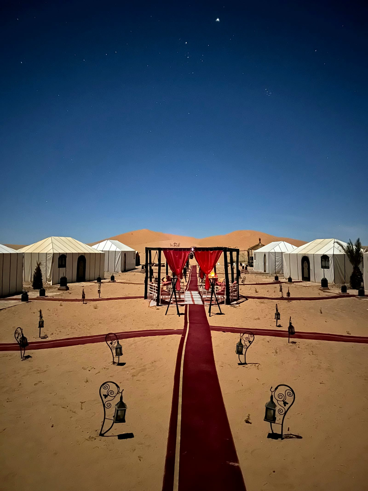

Arrival: The Camel Trek at Sunset
Most itineraries time your arrival at the edge of the Erg Chebbi dunes for late afternoon, when your vehicle gives way to a camel for the final approach into camp. The trek itself is unhurried, led by a guide on foot, and timed so the sun is setting over the dunes as you arrive — one of the most photographed moments of any Morocco itinerary, for good reason.
The Camp Itself
"Luxury desert camp" can mean different things, but on our itineraries it means private, furnished tents with real beds and, in most cases, an ensuite bathroom — not a basic bedroll on the sand. Camps are typically arranged around a central dining and lounge area, decorated in traditional Berber textiles and lanterns.
Dinner & the Campfire
Dinner is a full, traditional Moroccan meal — often a tagine cooked slowly over coals — served communally as the desert cools down for the evening. Afterward, most camps gather guests around a campfire for live Berber drumming and music, a genuinely local tradition rather than a staged show, and a natural, relaxed way to end the day.

Stargazing in the Sahara
With no light pollution for miles, clear desert nights reveal a genuinely striking amount of the night sky — the Milky Way is visible to the naked eye on clear nights, and many travelers find this alone worth the trip. Camps are far enough from any town that the darkness itself is part of the experience.
Sunrise & Departure
Most itineraries offer an early wake-up call for sunrise over the dunes — worth setting an alarm for, even after a late night by the fire. Breakfast follows back at camp before the return camel trek or 4x4 transfer to rejoin your vehicle and continue the journey.
A Few Practical Notes
- Tents are private, with proper beds and (on most camps) an ensuite bathroom — pack as you would for any overnight stay
- Bring a warm layer for the evening, even in summer, once the desert cools after sunset
- Camps generally have limited or no phone signal — part of the appeal, but worth knowing in advance
- A headtorch is useful for moving around camp after dark